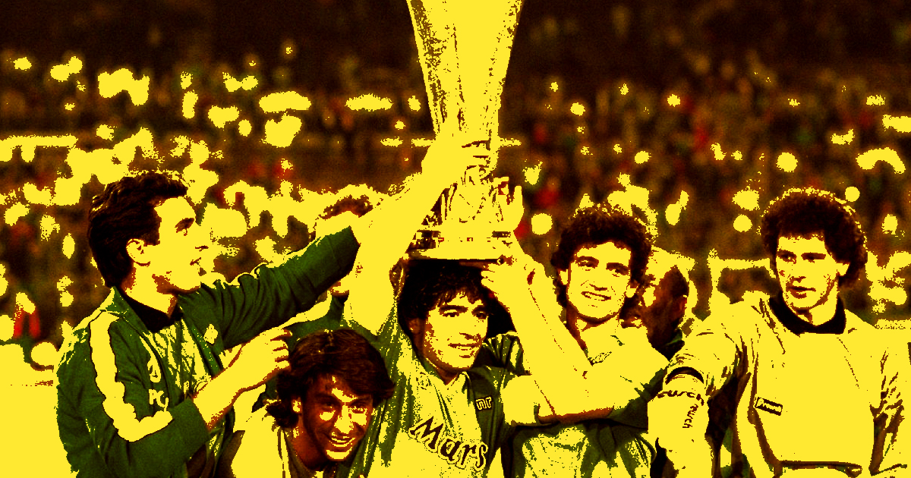
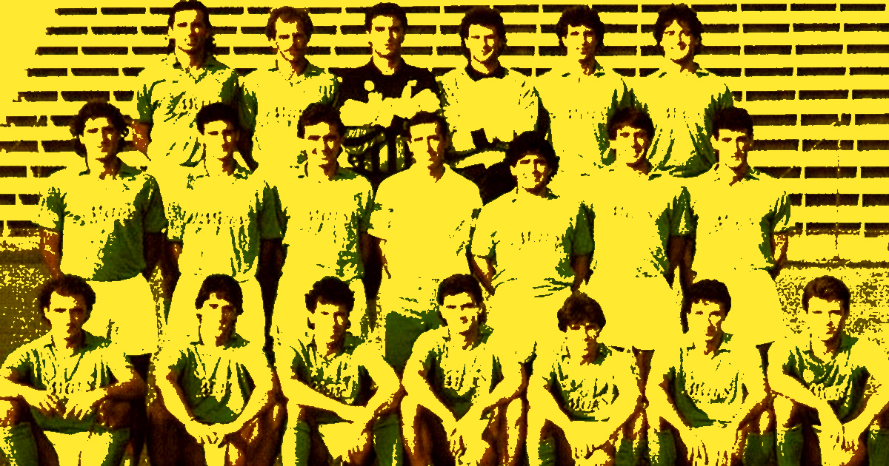
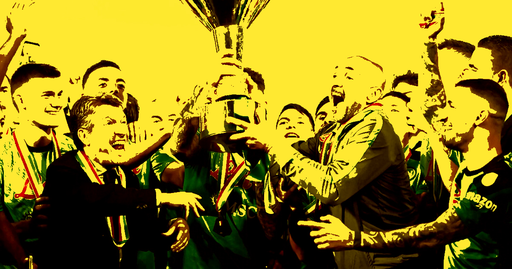
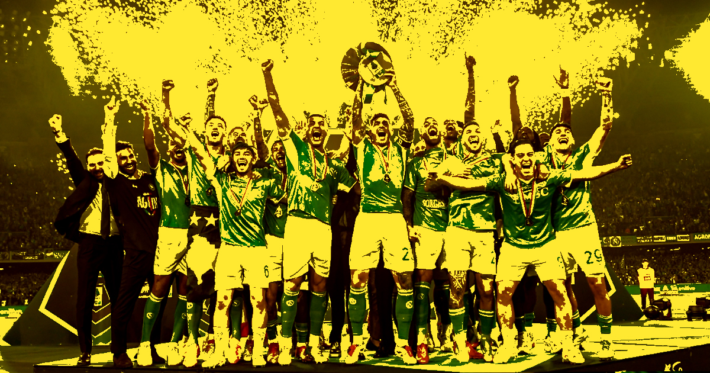

Historia
Ídolos
Scudetto
Contacto
Rivalidades
Historia
Ídolos
Scudetto
Contacto
Rivalidades
El Scudetto de 1987 marcó un antes y un después en la historia del SSC Napoli. Fue la primera liga italiana conquistada por el club, en la temporada 1986-87 de la Serie A, y significó la consagración definitiva de un equipo liderado por el legendario Diego Maradona. Hasta ese momento, el fútbol italiano estaba dominado por los grandes clubes del norte como Juventus FC, AC Milan e Inter Milan. Por eso, el título del Napoli no fue solo deportivo: tuvo un fuerte impacto social y cultural, representando el orgullo del sur de Italia frente al poder del norte. El equipo dirigido por Ottavio Bianchi mostró un fútbol sólido y efectivo. Además de Maradona, contaba con jugadores clave como Careca, Bruno Giordano y Ciro Ferrara, que formaron una base competitiva y muy difícil de vencer. El momento decisivo llegó el 10 de mayo de 1987, cuando el Napoli empató 1-1 contra la ACF Fiorentina en el estadio San Paolo (hoy llamado Estadio Diego Armando Maradona). Ese resultado fue suficiente para asegurar matemáticamente el campeonato, desatando una celebración histórica en toda la ciudad de Nápoles. Ese Scudetto no solo fue un título: fue una revolución futbolística y emocional, que transformó al Napoli en un símbolo de identidad y pasión. Desde entonces, el 1987 quedó grabado como uno de los años más importantes en la historia del club.

La temporada 1989-90 marcó la conquista del segundo Scudetto en la historia del SSC Napoli. Tres años después de obtener su primer campeonato de liga, el equipo volvió a alcanzar la cima del fútbol italiano bajo el liderazgo de Diego Armando Maradona, quien se encontraba en uno de los mejores momentos de su carrera. El Napoli protagonizó una intensa lucha por el título contra el AC Milan, uno de los equipos más poderosos de Europa en ese momento. A lo largo de la temporada, el conjunto napolitano mostró gran regularidad, combinando una sólida defensa con el talento ofensivo de jugadores como Careca, Andrea Carnevale y el propio Maradona. La consagración llegó el 29 de abril de 1990, cuando el Napoli derrotó por 1-0 a la Lazio en el estadio San Paolo. Con esa victoria, el equipo aseguró el primer puesto de la Serie A y conquistó el segundo campeonato de liga de su historia. La ciudad de Nápoles volvió a vivir una celebración multitudinaria, con miles de aficionados llenando las calles para festejar otro logro histórico. Este título tuvo un significado especial porque confirmó que el éxito de 1987 no había sido casualidad. El Napoli demostró que podía mantenerse entre los mejores equipos de Italia y competir de igual a igual contra clubes con mayores recursos económicos. Además, consolidó definitivamente la figura de Maradona como el máximo ídolo de la institución. El segundo Scudetto fue también uno de los últimos grandes éxitos de la era Maradona. Poco tiempo después, el astro argentino abandonaría el club, poniendo fin a la etapa más gloriosa de la historia napolitana. Sin embargo, el recuerdo de aquel campeonato permanece vivo entre los aficionados como una muestra del talento, la ambición y la grandeza que caracterizaron a ese inolvidable equipo de finales de los años 80.

La temporada 2022-23 quedará para siempre en la historia del SSC Napoli, ya que el club conquistó su tercer Scudetto, poniendo fin a una espera de 33 años desde el último título de liga obtenido en 1990. Este campeonato marcó el regreso del Napoli a la cima del fútbol italiano y fue celebrado por millones de aficionados en todo el mundo. Bajo la dirección del entrenador Luciano Spalletti, el equipo mostró un nivel de juego extraordinario durante toda la temporada. El Napoli se destacó por su fútbol ofensivo, dinámico y atractivo, dominando gran parte del campeonato desde las primeras jornadas y manteniéndose como líder durante casi toda la competición. Entre las figuras más importantes de aquel equipo se encontraban Victor Osimhen, máximo goleador del campeonato, y Khvicha Kvaratskhelia, una de las revelaciones de la temporada gracias a su talento, velocidad y capacidad para desequilibrar a las defensas rivales. Junto a ellos, jugadores como Giovanni Di Lorenzo, Stanislav Lobotka y Piotr Zieliński fueron fundamentales para el éxito del equipo. El título se aseguró el 4 de mayo de 2023, tras empatar 1-1 frente al Udinese. Con ese resultado, el Napoli alcanzó los puntos necesarios para proclamarse campeón de Italia de manera matemática. La ciudad de Nápoles se transformó en una enorme fiesta, con celebraciones que reunieron a cientos de miles de personas en calles, plazas y monumentos históricos. Este Scudetto tuvo un valor especial para los aficionados, ya que fue el primero conseguido después de la era Maradona. Muchos lo consideraron la confirmación de que el Napoli podía volver a ser campeón por mérito propio, construyendo una nueva generación de ídolos y escribiendo un capítulo inolvidable en la historia del club. La conquista del tercer Scudetto no solo representó un éxito deportivo, sino también el símbolo de una institución que supo reconstruirse, crecer y volver a competir entre los mejores equipos de Europa. Gracias a este logro, el Napoli reafirmó su lugar entre los grandes clubes del fútbol italiano y mundial.

La temporada 2024-25 fue otro capítulo histórico para el SSC Napoli, que conquistó su cuarto Scudetto y reafirmó su posición entre los clubes más importantes del fútbol italiano. Apenas dos años después de ganar el tercer campeonato de liga, el equipo volvió a demostrar su calidad y competitividad al imponerse en una Serie A muy disputada. A lo largo de la temporada, el Napoli mantuvo un rendimiento constante, combinando experiencia y juventud en una plantilla capaz de competir al máximo nivel. El equipo se destacó por su solidez defensiva, su capacidad ofensiva y una mentalidad ganadora que le permitió mantenerse en la lucha por el título hasta las últimas jornadas. La consagración fue celebrada con enorme entusiasmo por los aficionados napolitanos, que volvieron a llenar las calles de la ciudad para festejar un nuevo logro. Banderas celestes, cánticos y homenajes recordaron tanto a los héroes del presente como a las leyendas del pasado que ayudaron a construir la historia del club. Este cuarto Scudetto tuvo un significado especial porque confirmó que el éxito del Napoli ya no era un hecho aislado, sino el resultado de un proyecto deportivo sólido y ambicioso. El club demostró que podía mantenerse en la élite del fútbol italiano y competir regularmente por los títulos más importantes. Con esta conquista, el Napoli siguió ampliando su legado y fortaleciendo su identidad como uno de los equipos más representativos de Italia. El cuarto Scudetto no solo sumó una nueva estrella a la historia del club, sino que también consolidó una etapa de crecimiento y éxito que ilusiona a sus aficionados de cara al futuro.
